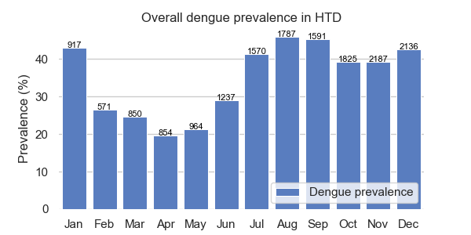

Note
Click here to download the full example code
Overall monthly prevalence¶
Example using your package
Warning
At the moment a the assumption is that if the pcr_dengue_serotype is present then the patient had dengue. Otherwise, the patient did not suffer dengue. However, the following things should be considered:
Not all datasets had pcr_dengue_serotype variable
The serology results and/or clinical notes need to be incorporated.

Out:
Applying... oucru_dengue_interpretation_feature.
Patients:
date dsource pcr_dengue_serotype ns1_interpretation igm_interpretation igg_interpretation dengue_interpretation month year
study_no
01nva-003-1001 2020-06-13 01nva <NA> <NA> <NA> <NA> False 6 2020
01nva-003-1002 2020-06-23 01nva <NA> <NA> <NA> <NA> False 6 2020
01nva-003-1003 2020-07-04 01nva <NA> <NA> <NA> <NA> False 7 2020
01nva-003-1004 2020-06-24 01nva <NA> <NA> <NA> <NA> False 6 2020
01nva-003-1005 2020-07-22 01nva <NA> <NA> <NA> <NA> False 7 2020
... ... ... ... ... ... ... ... ... ...
md-995 2003-07-28 md DENV-2 <NA> <NA> <NA> True 7 2003
md-996 2003-07-25 md <LOD <NA> <NA> <NA> False 7 2003
md-997 2003-07-28 md <LOD <NA> <NA> <NA> False 7 2003
md-998 2003-07-29 md <LOD <NA> <NA> <NA> False 7 2003
md-999 2003-07-29 md DENV-4 <NA> <NA> <NA> True 7 2003
[16489 rows x 9 columns]
Serotypes:
dsource 06dx 13dx 32dx d001 df dr fl md Total
pcr_dengue_serotype
<LOD 0 6032 21 37 438 0 446 458 7432
DENV-1 136 826 12 23 675 47 108 942 2769
DENV-1,DENV-2 0 7 0 2 0 3 0 0 12
DENV-1,DENV-3 0 1 0 1 0 0 0 0 2
DENV-1,DENV-4 0 6 0 1 0 0 0 0 7
DENV-2 57 453 10 23 367 24 65 437 1436
DENV-2,DENV-3 0 0 0 0 0 1 0 0 1
DENV-3 23 197 16 4 48 6 30 184 508
DENV-3,DENV-4 0 1 0 0 0 0 0 0 1
DENV-4 7 576 13 4 110 1 4 49 764
Mixed 0 0 0 0 9 0 0 8 17
Total 223 8099 72 95 1647 82 653 2078 12949
Dengue:
dsource 01nva 06dx 13dx 32dx 42dx d001 df dr fl md Total
dengue_interpretation
False 155 107 5924 7 664 37 510 1458 107 1424 10393
True 0 223 2184 68 0 75 1209 84 633 1620 6096
Total 155 330 8108 75 664 112 1719 1542 740 3044 16489
:
prevalence n_patients
Jan 42.994242 1042
Feb 27.986907 611
Mar 25.131996 947
Apr 21.128319 904
May 21.493441 991
Jun 28.078078 1332
Jul 42.660276 1669
Aug 47.483221 1788
Sep 44.047619 1596
Oct 38.528139 1848
Nov 38.107161 1997
Dec 41.043084 1764
15 16 17 18 19 20 21 22 23 24 25 26 27 28 29 30 31 32 33 34 35 36 37 38 39 40 41 42 43 44 45 46 47 48 49 50 51 52 53 54 55 56 57 58 59 60 61 62 63 64 65 66 67 68 69 70 71 72 73 74 75 76 77 78 79 80 81 82 83 84 85 86 87 88 89 90 91 92 93 94 95 96 97 98 99 100 101 102 103 104 105 106 107 108 109 110 111 112 113 114 115 116 117 118 119 120 121 122 123 124 125 126 127 128 129 130 131 132 133 134 135 136 137 138 139 140 141 142 143 144 145 146 147 148 | # Libraries
import calendar
import pandas as pd
import numpy as np
import seaborn as sns
import matplotlib.pyplot as plt
# DataBlend library
from datablend.core.repair.correctors import oucru_dengue_interpretation_feature
# Seaborn
sns.set_theme(style="whitegrid")
# ---------------------------------
# Methods
# ---------------------------------
def add_totals(df):
"""Adds total sum for rows/cols."""
# Add columns
df.loc['Total', :] = df.sum(axis=0)
df.loc[:, 'Total'] = df.sum(axis=1)
df = df.astype(int)
# Return
return df
def prevalence(x):
return (np.sum(x) / len(x)) * 100
# ---------------------------------
# Constants
# ---------------------------------
# The data filepath
path = '../../resources/data/20212002-v0.2/combined/combined_tidy.csv'
# Features
features = ['study_no',
'date',
'dsource',
'pcr_dengue_serotype',
'ns1_interpretation',
'igm_interpretation',
'igg_interpretation']
# ---------------------------------
# Main
# ---------------------------------
# Read data
data = pd.read_csv(path, low_memory=False,
parse_dates=['date'],
usecols=features)
# Format
data = data.convert_dtypes()
data = data[features]
# Define positive dengue
#data = dengue_interpretation(data)
# Add dengue interpretation
data['dengue_interpretation'] = \
oucru_dengue_interpretation_feature(data,
pcr=True, ns1=True, igm=True,
paired_igm_igg=True, default=False)
# Overall outcome for patient
patients = data.groupby('study_no').max()
patients['month'] = patients.date.dt.month
patients['year'] = patients.date.dt.year
# PCR serotypes count per dataset
serotypes = add_totals(pd.crosstab(
patients.pcr_dengue_serotype, patients.dsource))
# Dengue interpretation count per dataset
dengue = add_totals(pd.crosstab(
patients.dengue_interpretation, patients.dsource))
# Show
print("\nPatients:")
print(patients)
print("\nSerotypes:")
print(serotypes)
print("\nDengue:")
print(dengue)
# Compute prevalence
# ------------------
# Datasets where serotype has non-null values.
idxs = patients.dsource.isin(serotypes.columns)
# Compute prevalence
prevalence = patients.reset_index().groupby('month').agg(
prevalence=('dengue_interpretation', prevalence),
n_patients=('study_no', 'count'))
# Add legible labels
prevalence.index = \
[calendar.month_abbr[x] for x in prevalence.index]
# Show
print("\n:")
print(prevalence)
# ------------------------------------------------
# Plot
# ------------------------------------------------
# Initialize the figure
f, ax = plt.subplots(figsize=(6, 3))
# Plot
sns.set_color_codes("muted")
sns.despine(left=True, bottom=True)
sns.barplot(x=prevalence.index,
y=prevalence.prevalence,
label="Dengue prevalence",
color="b",
linewidth=0.75)
# Add a legend and informative axis label
ax.legend(ncol=2, loc="lower right", frameon=True)
ax.set(xlabel="", ylabel="Prevalence (%)",
title="Overall dengue prevalence in HTD")
# Add number of patients considered
for i, (index, row) in enumerate(prevalence.iterrows()):
ax.text(i, row.prevalence, int(row.n_patients),
color='black', ha="center", fontsize=8)
# Show
plt.show()
|
Total running time of the script: ( 0 minutes 7.764 seconds)